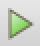

Paraview session example¶
This section gives an example of a Paraview session involving viewing results generated by the domino toppling example described in the previous section. Although our presentation is self–contained, Paraview tutotials greatly expand on the minimalist exposition provided here.
Viewing basic geometry¶
Let’s start by viewing the results saved into the out/xmftest0 directory. These were generated in the ‘WRITE’ mode [1] prior to any calculations. Consequently, out/xmftest0 only stores the initial geometry of the problem. Let’s open the *.xmf files found inside of this directory by using File \(\to\) Open and selecting xmftest0_grids.xmf and xmftest0_spheres.xmf files. When opening a first of those files you will be prompted to sellect an XDMF reader. Use any of the Xdmf3 options, cf. Fig. 30.

Fig. 30 XDMF reader selection in Paraview (use any of the Xdmf3 options).
After opening both the grids and the spheres files, your application window may look like Fig. 31. Let’s select the Render View in the “Layout #1” window and click onto the little eye to the left of xmftest0_grids.xmf item in the Pipeline Browser. We should now be able to manipulate (rotate by left clicking and moving around) the graphical representation of the domino model, cf. Fig. 32.

Fig. 31 Paraview application window after opening xmftest0_grids.xmf and xmftest0_spheres.xmf files found in the out/xmftest0 directory.

Fig. 32 Render view with item xmftest0_grids.xmf enabled in the Pipeline Browser.
To complete presentation of the initial geometry we would like to enable rendering of the sphere. To do this we need to
select the xmftest0_spheres.xmf item in the Pipeline Browser, followed by clicking Apply in the properties window underneath.
This will cause the glyph icon,  , to become active allowing us to use a sphere based representation
of the xmftest0_spheres.xmf dataset. We can change the default Glyph1 label that appeared in the Pipeline Browser
by left clicking on it once (or selecting Glyph1 and pressing enter). Let it be called spheres instead, cf. Fig. 33.
Finally, using the Properties dialog box underneath the Pipeline Browser, we set up the Glyph Type as Sphere, and set the
Scale Mode to use the scalar field which has been automatically picked up as RADI just above. This means that the unit glyph
size will be scaled by the scalar RADI value read from the xmf file. In our case the glyph size is the sphere diameter and since
RADI represents the sphere radius, we need additionally set the Scale Factor to be equal 2. By pressing Apply we make
the sphere visible, as seen in Fig. 33.
, to become active allowing us to use a sphere based representation
of the xmftest0_spheres.xmf dataset. We can change the default Glyph1 label that appeared in the Pipeline Browser
by left clicking on it once (or selecting Glyph1 and pressing enter). Let it be called spheres instead, cf. Fig. 33.
Finally, using the Properties dialog box underneath the Pipeline Browser, we set up the Glyph Type as Sphere, and set the
Scale Mode to use the scalar field which has been automatically picked up as RADI just above. This means that the unit glyph
size will be scaled by the scalar RADI value read from the xmf file. In our case the glyph size is the sphere diameter and since
RADI represents the sphere radius, we need additionally set the Scale Factor to be equal 2. By pressing Apply we make
the sphere visible, as seen in Fig. 33.
{kind=link}
Tip
When initially viewing results by pressing the eye symbol in the Pipeline Browser, Paraview often automatically selects an attribute to be viewed (e.g. displacement). You can use the attribute drop–down menu circled in Fig. 34, and select “Solid Color” in order to draw plain geometry.
Viewing results attributes¶
We are going to use the out/xmftest3 results in order to demonstrate viewing attributes. You can delete the previous results by selecting them in the Pipeline Browser and pressing backspace. Use the procedure outline above in order to load files:
- out/xmftest3/xmftest3_grids.xmf,
- out/xmftest3/xmftest3_constraints.xmf,
- and out/xmftest3/xmftest3_spheres.xmf.
Add glyphs for both constraints and spheres just as it was done for the spheres results above. Set the same scaling for the spheres and use a constant scaling factor of 0.02 for the constraints. Constraints, e.g. contact points, are typically located in between of solid mesh surfaces, and hence they are often not visible. Select the grids results in the Pipeline Browser and find the Opacity sliding bar in the Properties window. Turn it down to about 0.2 and repeat the same procedure for the spheres glyph. Now all solid geometry is slightly transparent allowing us to view it together with the spheres representing contact points between the base block and the domino pieces, cf. Fig. 34.
{kind=link}
Fig. 34 The initial geometry for the out/xmftest3 results set. Opacity of grids and the sphere has been decreased in order to facilitate viewing of constraints glyphs.
Let’s now select the grids results set in the Pipeline Browser and use the drop–down menu circled in Fig. 34 in order to view the velocity field magnitude of domino pieces. Paraview automatically inserts a legend called “VELO Magnitude” into the render view in order to index the colors that are drawn on domino surfaces. You can double click onto the legend and move it around if the default placement is not appropriate. Now, highlight the constraints results set in the Pipeline Browser and select the “GAP” attribute from the drop–down menu. A legend labeled “GAP” is additionally inserted into the render view. We can now use the step edit box, highlighted in the top–right area of Fig. 35, and select a time step at which we wish to view the results. In our case, out of the 101 steps available, we have selected step 51.

Fig. 35 Rendering of attributes, simultaneously for grids and constraints, using the out/xmftest3 results, at step 51.
Note
Contact reactions are conveniently rendered using the arrow glyphs. Select the constraints glyph in the Pipeline Browser and set the Glyph Type to Arrow. In the Vectors drop–down menu in the Active Attributes area select the REAC vector field. Change the scale factor of the glyph to about 0.15 and press Apply. Then use the attribute drop–down menu, circled in Fig. 34, and select REAC.
Exporting a video clip¶
In Fig. 35 to the left of the time step selection box, we can see a set of buttons looking like a video playback control panel. This is what they essentially are. You can press the first frame button, , in order to rewind the simulation back to its initial frame. To close our tutorial we are going create and a video clip, animating the reaction forces, rendered as explained in the note above. First, you can simply press play, , in order to play the animated results within Paraview. To export the same animation as a video clip use File \(\to\) Save Animation and then follow the instructions.
{kind=link}
{kind=link}
The first clip below demonstrates an animation of the domino toppling with the domino velocity and contact gap magnitudes juxtaposed as color maps:
This second clip depicts the animated contact forces:
| [1] | Solfec operates either in ‘WRITE’ mode, computing and writing new results, or in ‘READ’ mode, reading and post-processing existing results. |